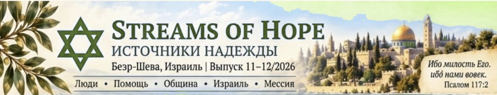
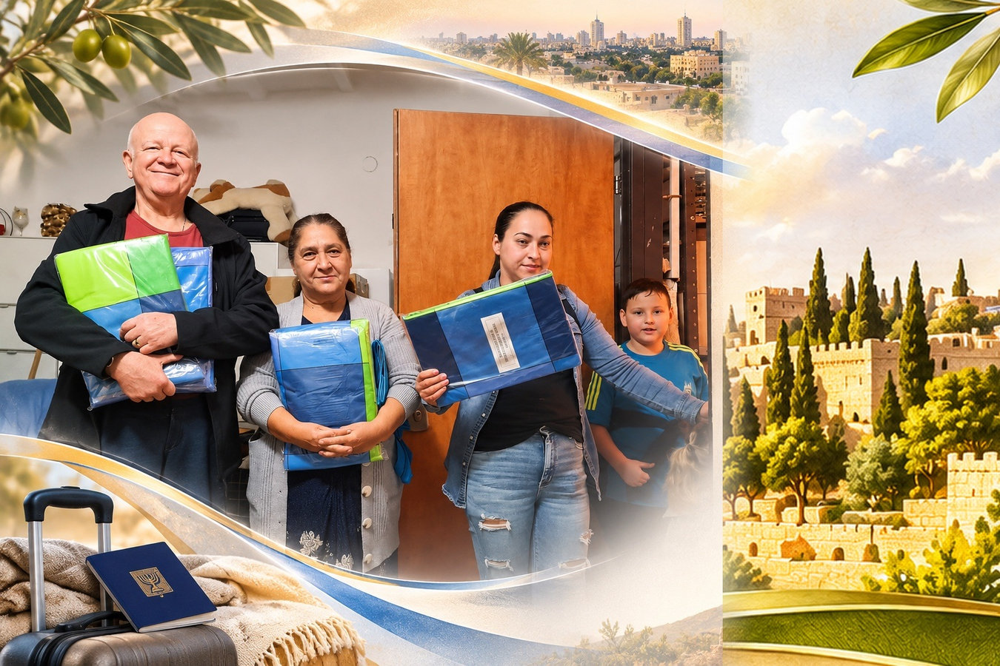

Свет надежды в повседневном служении
Дорогие братья, сёстры и друзья!
Подходит к завершению ещё один год. Для каждого из нас он был наполнен своими заботами, переживаниями, надеждами и испытаниями. Но среди всего происходящего есть то, что остаётся неизменным, — потребность человека в заботе, утешении и поддержке Бога.
Наше служение в Беэр-Шеве продолжается. Благотворительная столовая принимает людей, нуждающихся в горячем питании и человеческом участии. Мы продолжаем помогать новым репатриантам, пожилым людям, пережившим Холокост, малоимущим семьям и тем, кто оказался в непростых жизненных обстоятельствах.
За каждым обращением стоит своя история. Для кого-то важна продуктовая помощь, для другого — одежда или горячий обед. А иногда человеку особенно необходимо просто почувствовать, что его не забыли, что рядом есть люди, готовые выслушать и поддержать.
Именно из таких, казалось бы, небольших дел складывается настоящее служение.
Мы благодарим Бога за возможность продолжать эту работу и за каждого, кто принимает в ней участие, помогает, поддерживает и молится.
Забота о людях каждый день

Благотворительная столовая
Горячая пища — это не только необходимая помощь. Для многих наших посетителей столовая стала местом, где можно встретить знакомые лица, поговорить, почувствовать внимание и услышать о Боге и Его милости.
Здесь за одним столом встречаются люди разного возраста, с разными судьбами и жизненным опытом. Одни приходят регулярно, другие обращаются за помощью в особенно трудный период.
Мы стараемся, чтобы каждый человек, приходящий к нам, чувствовал не только практическую поддержку, но и уважение к себе.
Порой обычный обед, приготовленный и поданный с любовью, значит гораздо больше, чем кажется на первый взгляд.
Поддержка пожилых людей
Особое место в нашем служении занимает забота о пожилых людях, в том числе о переживших Холокост.
За их плечами — долгие годы жизни, непростые воспоминания, потери и испытания. Сегодня многим из них необходимы не только материальная помощь, но и внимание, общение, ощущение собственной значимости.
Мы хотим, чтобы каждый из них знал, что его жизнь, история и достоинство имеют значение.

Помощь новым репатриантам
Переезд в другую страну — это начало новой жизни, но вместе с надеждой он нередко приносит множество трудностей.
Новый язык, непривычная обстановка, поиск работы и необходимость обустраивать повседневную жизнь требуют времени и сил.
Мы продолжаем поддерживать новых репатриантов, помогая им необходимыми вещами, одеждой и продуктами,документами насколько позволяют наши возможности.
Для нас важно, чтобы люди, недавно приехавшие в Израиль, знали: они не остаются один на один со своими трудностями. Что Бог их любит.